Name (optional). If you give your level a name, it is saved to your Custom list right away.
Parameters. These are the sets, propositions, and predicates used in the statements you want to prove. List them one on each line, each followed by a colon and then their "type", as follows:
Variables. These are the assumed elements of sets, appearing in the upper-left corner in blue. List them one on each line, each followed by ∈ and then the set they belong to:
Hypotheses. These are the statements that you assume to be true, such as P∧Q, built out of the parameters using the logical operators. List them one on each line.
Conclusion. This is the statement that you want to prove.
Difficulty. What difficulty level do you want to prove it on?
Variables currently in use:
New variable:
Enter a statement for the label:
Enter an expression, possibly using available variables.
How to write basic algebraic expressions:
| Addition | x+y | |
| Subtraction | x−y | (type x-y) |
| Negation | −x | (type -x) |
| Multiplication | x·y | (type x*y, not xy) |
| Exponentiation | x^y | |
| Division | x/y | |
| Square root | √x | (type \sqrt x, or x^(1/2)) |
| Other roots | x^(1/3) | (any rational power) |
| Absolute value | ∣x∣ | (type |x|) |
| Min/max | min(x,y) | (and max(x,y)) |
Only some number systems like ℚ, ℝ, and 𝕊 allow division, and of course only by a nonzero denominator. Any algebra block involving division requires sufficient inputs to prove that every denominator is nonzero.
Only the number systems ℝ and 𝕊 allow square roots and fractional exponents. Furthermore, a square root or a fractional exponent with even denominator requires the base to be nonnegative; any algebra block involving such operations requires sufficient inputs to prove such nonnegativity.
The ordinary algebra block also cannot prove things about case-split functions like absolute values, minima, or maxima unless it has sufficient inputs to determine which case holds, i.e. that x in ∣x∣ is ≥0 or ≤0, and that in min(x,y) and max(x,y) we have x≤y or y≤x. The "≤∨>" block is helpful for this. (The advanced "alg+" block does that reasoning itself.)
Label this wire with the following set or proposition:
You have a saved proof in progress for this level.
Note: completing this level at the lower difficulty will re-lock the higher difficulty for a while.
Copy this JSON, e.g. to paste into a bug report:
Paste exported proof JSON below, then click Import. First make sure you have selected the same level the proof was exported from.
You can use the following key sequences to enter mathematical symbols. Letter sequences starting with a backslash "\" must end with a space.
Olorin is a game where you prove abstract theorems in classical predicate logic by connecting boxes with wires. It's a fun collection of puzzles, and also an educational tool for learning to write proofs. There are over a hundred levels, divided into six "worlds" with several stages each, and three difficulty settings. You can also create and solve custom levels, although this is not well-documented.
If you're just getting started, you should probably close this box now and try it out, starting from level 1-1-1 on Novice difficulty and proceeding in order. The game will prompt you with hints at the beginning of each level when new features are introduced, and you can come back to this overview at any time by clicking "About" on the "Select Level" screen. Currently you're allowed to skip around rather than playing the levels in order, but when first learning I highly recommend you go in order on Novice difficulty; some guidelines about progressing through the worlds and increasing the difficulty level are given below.
In each level you have some number (perhaps zero) of "assumptions" or "givens" that appear in boxes on the left, and one desired "conclusion" appearing in a box on the right. Your goal is to connect the assumptions to the conclusion: logic flows from left to right.
You can add new boxes to the graph by dragging and dropping them from the "palette" bar on the left; more options will be added to the palette as you progress through the levels. Each box represents a "proof rule", and has some number of "input ports" on the left and "output ports" on the right. You can drag a connection from any output port to any input port, and it will be valid as long as they "carry" the same statement or value. Wires carrying "values" rather than "truth" are colored blue. Some boxes also give you "local assumptions" that act like output ports, but can only be used to prove the corresponding "subgoal" input port; these are matched visually with "brackets".
Boxes already in the graph can be dragged around to organize the proof visually. You can drag multiple boxes at once by first "selecting" several of them with shift-click, or by dragging a rectangle around them, and then dragging one of them. Furthermore, boxes with brackets can be resized horizontally by dragging the left or right edges. I highly encourage you to arrange the boxes so that all the wires travel only left-to-right, and make brackets large enough that the "subproofs" fit entirely inside.
The canvas goes on as far as you need it to in every direction: holding a box you are dragging against any edge of the window scrolls the canvas along underneath it, so a proof can be spread out as widely as you like. Scrollbars appear whenever part of it is out of sight, and you can also move around by holding Ctrl (or ⌘) and dragging the blank background, which slides the whole canvas behind the window.
For the proof to be correct, every input port must have something coming into it, and all wires must connect ports carrying the same statement or value. (Not every output port needs to be used, but usually most will be.) When your proof is correct, the conclusion and background will turn a color (according to the difficulty level), as will that level in the level-selection dialog, with one to three stars awarded according to the difficulty setting. If you make a mistake, you can remove boxes and wires by clicking on the red "X" that appears when you hover over them, or you can remove your entire attempted proof with the "Clear" button.
At Novice difficulty (★☆☆), most unconnected ports are automatically labeled with the statement or value they carry (red for input ports, which are missing something to connect to them). In addition, all wires are automatically labeled with the statement or value they carry, and incorrectly connected wires are colored red. At any given point during the construction of a proof, the labeled output ports can be thought of as "givens" (known or assumed facts), and the red-labeled input ports can be thought of as "goals" (statements to prove). (However, not all givens are available for all goals; hypotheses introduced on the left side of a bracket are only usable to prove the corresponding subgoal on the right side of that bracket.) A proof novice can choose the rule to apply next, guided by the logical structure of the givens and the goals.
At Adept difficulty (★★☆), ports are not labeled, and most wires are not labeled automatically. Instead, you are prompted for a label for each wire. (The exceptions are wires connected directly to a hypothesis or the conclusion, since it is obvious what those should be labeled, and wires that carry values.) Wires with incorrect labels, or that are incorrectly connected, are colored red, and both prevent the proof from being marked correct. In particular, even if your proof would be correct in Novice mode according to the connections only, it is rejected in Adept mode if you labeled the wires incorrectly. A proof adept knows how each applied rule affects the current givens and goals.
At Master difficulty (★★★), you are still required to label all the wires yourself (with the same exceptions), but incorrectly connected or labeled wires are not colored red any more. The only information you get about the correctness of the proof (including your labels on the wires) is whether the conclusion turns purple! A proof master can plan and execute an entire proof alone, and find and fix their own mistakes.
I recommend that you work up in difficulty setting "one world behind" your most advanced levels. For instance, start by completing Proposition World at Novice setting. Then complete Advanced Proposition World at Novice setting. Then go back and re-do Proposition World at Adept setting. Next, work on Quantifier World at Novice setting, Advanced Proposition World at Adept setting, and Proposition World at Master setting, and so on. By inserting a delay before you go back to re-do each level at a higher difficulty, you will reinforce your learning and make the challenge more meaningful. Similarly, when you are working through a given world at a higher difficulty setting, it would be easy to "cheat" by doing each level again at Novice setting and then copying the proof and wire labels from your short-term memory at the higher difficulty, but you won't learn as much that way. If you start working on a higher difficulty setting and get stuck, you can downgrade the difficulty without losing your partial proof using the button in the upper-right corner, but of course then you'll only get credit for completing the level at the lower difficulty.
It's worth noting that whether a given wire is colored red as "incorrect" in Novice and Adept modes can depend not only on that wire and its label, but on the other wires in the diagram. A wire in an incomplete proof may be colored black at first, but become red when another wire is added, since the second wire gives additional information about what must be carried by the first wire. A valid proof can also not contain cycles (loops), and of course a cycle usually involves more than one wire.
Somewhat more surprisingly, the opposite can also happen: a wire can be colored red at first but become black when another wire is added. This generally happens if you connect a "proposition" wire to a quantifier rule (∀ or ∃) without first connecting the corresponding "value" wire, since until Olorin knows what the value is, it can't tell that the proposition wire is correct. This is arguably a bug, since in other contexts "not yet known to be incorrect" wires are colored black rather than red, but the prospects of fixing it in the near future are slim, due to Narya's current lack of a full unification algorithm. Just make a habit of always connecting the value (blue) wires first, or don't worry about the temporarily red wire if you do it the other way.
Many people have represented proofs graphically, starting with Charles Sanders Peirce, one of the inventors of predicate logic. More recently, the physicist Roger Penrose introduced string diagrams for tensors, mathematicians such as Andre Joyal and Ross Street formalized them to describe monoidal categories, and the logician Jean-Yves Girard introduced proof nets for linear logic.
The specific style of graphical proofs used by Olorin is based heavily on the graphs used by The Incredible Proof Machine by Joachim Breitner, which is essentially a graphical representation of Gentzen-style natural deduction. The Incredible Proof Machine is, well, incredible! In particular, relative to other graphical languages, it introduced "expandable brackets" for local assumptions. Although perhaps obvious in hindsight (they correspond to "discharged assumptions" in Gentzen's trees), I believe these are a big improvement over anything previously available, at least for informal and pedagogical purposes. Olorin borrows not only these expandable brackets, but other aspects of the look and feel of The Incredible Proof Machine.
The main enhancement added by Olorin over what The Incredible Proof Machine can do is value-carrying wires for predicate logic. The Incredible Proof Machine does support predicate logic, but the elements are managed only by unification rather than visually with wires (and also its rules are single-sorted and don't support empty domains). Olorin also includes some other features that could probably also be added to The Incredible Proof Machine with less work, such as if-and-only-if blocks and classical proof by contradiction, and some additional pedagogical and gamification features such as Adept and Master difficulty levels. In addition, since its underlying logic is a full-spectrum dependent type theory, Olorin is not restricted to proofs about abstract sets, propositions, and predicates like The Incredible Proof Machine, but includes proofs using algebra; in the future it may also include mathematical induction.
On the other hand, the underlying logic of the The Incredible Proof Machine is more configurable than Olorin's. For instance, in addition to predicate logic, it supports Hilbert systems and NAND calculus. Moreover, The Incredible Proof Machine's unification algorithm can infer labels for more wires and ports in an incomplete proof than Olorin's (in fact, Olorin doesn't currently use unification per se at all, only bidirectional typechecking). If you like Olorin, you should check out The Incredible Proof Machine too!
The underlying proof-checker of Olorin is Narya. Narya is an experimental proof assistant for higher-dimensional dependent type theory such as higher observational type theory (HOTT) and internally parametric type theories. Olorin doesn't currently use very much of the power of Narya, but in principle it could be extended to be a full-fledged graphical proof assistant for dependent type theory using the same core.
Narya is written in OCaml, which through the magic of js_of_ocaml is compiled to run in your browser underneath Olorin. If you'd like to try Narya directly, its ordinary interactive mode is also available in your browser as jsNarya. If Olorin and jsNarya whet your appetite, you can download the full Narya proof assistant to run locally on your computer from its github page.
The "algebra" blocks that appear in the last couple worlds of Olorin are not actually checked by Narya, but treated as an "oracle" and verified using the SMT solver Z3.
Narya is the third elven-ring in J.R.R. Tolkien's Legendarium, the ring of fire. Fire is HOT(T). Narya was given by Círdan the Shipwright to Gandalf when Gandalf arrived in Middle-Earth. Olorin is a name of Gandalf himself: a kindly helper who secretly uses the power of Narya to save the world.
The Gwaith-i-Mírdain (I know you didn't ask about them, but that's the name of our github organization and appears in the URL), or Brotherhood of Jewel-Smiths, were the master Elven craftsmen of the Second Age who created the Rings of Power, including Narya.
Mike Shulman, a mathematician at the University of San Diego, with help from others. Here's my web page. Send me your questions, suggestions, complaints, and other thoughts! I look forward to hearing from you.
The boxes on the left are assumptions or hypotheses. The box on the right is the desired conclusion. Your goal is to connect them with wires so that all the labels match, thereby proving the conclusion.
A dot on the right of a box is an output port. If I know what the label of the wire coming out of an output port would be, I'll label it in black:
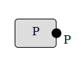
A dot on the left of a box is an input port. If I know what the label of the wire coming into of an input port must be, I'll label it in red: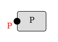
Create a wire connection by clicking on an output port and dragging it to an input port: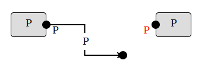
To view this hint again during this level, click "Show Hint" in the upper-right corner.
You can add new boxes to the proof by dragging them from the palette on the left.
If a box has a symbol on the right, it is called a prove rule, and you should connect its output port to something first. That will give me more information about what its other ports must be. The output port should be connected to an input port whose label uses the same symbol:
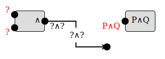
Therefore, if you have an open input port using some symbol, you probably want to add a box that has that symbol on the right.The symbol ∧ means "and". Mnemonic: it looks like a capital "A" for And, or like a lowercase "n" as in "salt 'n pepper".
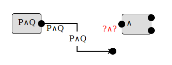
Therefore, if you have an open output port using some symbol, you may want to add a box that has that symbol on the left.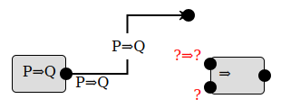
The symbol ⇒ means "implies", so that P⇒Q means "P implies Q" or equivalently "if P, then Q".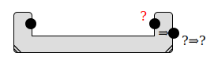
When a box has a "bracket" like this one, the output coming from the left inside the bracket is a hypothetical assumption, which can only be used to derive the corresponding subgoal on the right of the same bracket.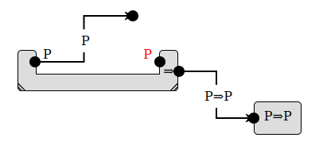
You can also stretch the bracket by clicking on either side and dragging it out, so that the entire subproof fits inside.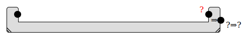
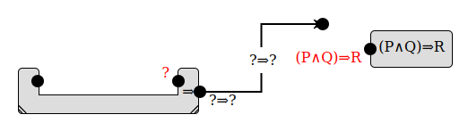
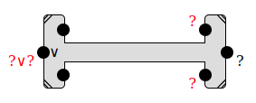
When a box has one or more "brackets" like this one, each output coming from the left inside a bracket is a hypothetical assumption, which can only be used to derive the corresponding subgoal on the right of the same bracket.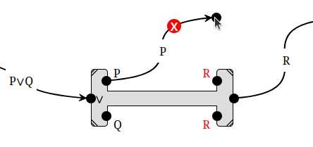
You can also stretch a box with brackets by clicking on either side and dragging it out, so that the entire subproofs fit inside.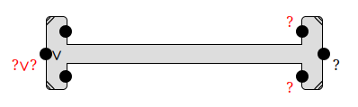
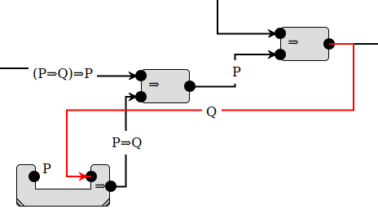
Local assumptions also can't "escape" from a bracket; they can only be used to prove the subgoal of that bracket.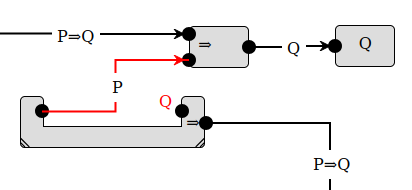
However, remember that assumptions you already have can be brought into a bracket from the left, and that assumptions can be used more than once.The symbol ¬ means "not". Mnemonic: it's like − for negating a number, but instead it negates a statement.
When using a negation, either input port can be the negated statement, and either one can be connected first:
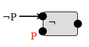
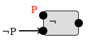
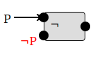
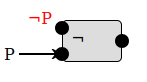
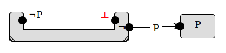
This is the same as the last level, but you have a limit of seven rule blocks.
If you look at your solution to the previous level, you'll probably see that you proved P⇒R twice.
We'd like to just prove it once and then
Usually I can guess the label that should go on any wire from the surrounding blocks and wires, if they are connected correctly. However, I can't guess the output of a "prove ⇒" block or the ⇒ input of a "use ⇒" block, so if one of those is connected directly to the other, I'm stuck. To help me out, use a "label" block in between. When you place a label block, it will prompt you for a statement, and then both its input and its output must be labeled with that statement.
Usually I can guess the label that should go on any wire from the surrounding blocks and wires, if they are connected correctly. However, sometimes I need a little help. In particular, the inputs of an algebra block never determine its output, and the output of a "prove ¬" block never determines its inputs. Therefore, if the both inputs of a "prove ¬" block come from the outputs of algebra blocks, I have no way to guess what labels should go on those wires.
The "label" block allows you to tell me what a particular wire should be labeled. When you place it, it will prompt you for a statement, and then both its input and its output must be labeled with that statement.
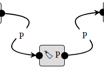
| ℕ | The natural numbers: 0,1,2,3,… |
| ℤ | The integers: …,−3,−2,−1,0,1,2,3,… |
| ℚ | The rational numbers: fractions p/q where p,q∈ℤ, q≠0 |
| ℝ | The real numbers: finite or infinite decimals, e.g. π, √2 |
| ℂ | The complex numbers: a+bi where a,b∈ℝ and i²=−1 |
| 𝕊 | The surreal numbers: the real numbers plus "infinite" numbers like ω and "infinitesimal" numbers like 1/ω |
The algebra block can only prove equations or inequalities, but there are some important "algebraic" facts that are disjunctions. One is that if the product of two numbers is zero, one or the other of them must be zero. If you need this fact, use the block labeled "?·?=0": give it the two numbers and an assumption that their product is zero, and you'll get out that either the first is is zero or the second is zero.
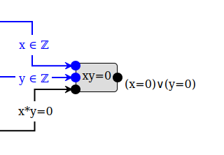
Blue ports, such as the first two inputs to this box, must be connected to blue wires, which carry values rather than statements. Blue wires are labeled by the value along with the set it belongs to: x ∈ ℤ means the value x belongs to the set ℤ. Here are the sets of numbers we'll be using:
| ℕ | The natural numbers: 0,1,2,3,… |
| ℤ | The integers: …,−3,−2,−1,0,1,2,3,… |
| ℚ | The rational numbers: fractions p/q where p,q∈ℤ, q≠0 |
| ℝ | The real numbers: finite or infinite decimals, e.g. π, √2 |
| ℂ | The complex numbers: a+bi where a,b∈ℝ and i²=−1 |
| 𝕊 | The surreal numbers: the real numbers plus "infinite" numbers like ω and "infinitesimal" numbers like 1/ω |
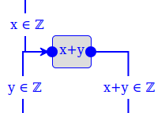
Warning: do not connect any black "statement" wires to a blue "expr" block! And do not connect any blue "value" wires to a black "alg" box! All the inputs to an "alg" box must be equations (or inequalities), as those are the only things I can do algebra with; I can figure out on my own which variables appear in the equations.